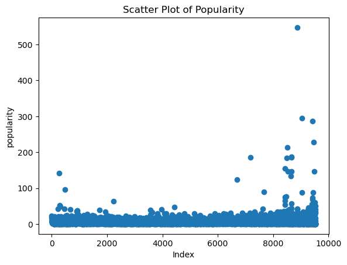
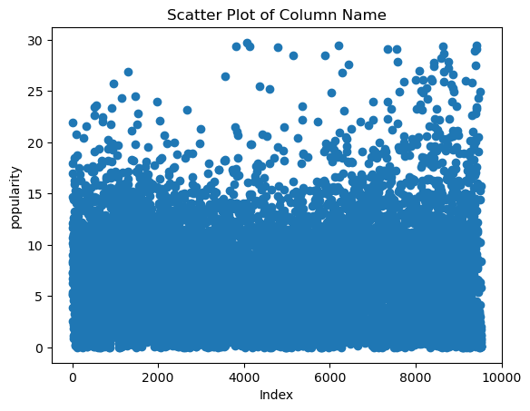

In this project, we’ll use feature selection to pinpoint and select the most crucial features from the dataset to address specific tasks. Feature selection can impact and improve the model’s performance, mitigate overfitting, contribute to noise reduction, and provide us with new insights to the data.
To carry out my feature selection, I first imported 3 data sets containing different information. The metadata_df contains data on a movie’s popularity, vote average, revenue, budget, etc. The movie_ratings_df provides IMDB user ratings on different movies with individual ratings (out of 5). The links_df contains ID data that I’ve used to link these dataframes together.
Code
import pandas as pdimport numpy as npimport pandas as pdfrom sklearn.model_selection import train_test_splitfrom sklearn.feature_selection import SelectKBestfrom sklearn.feature_selection import f_classiffrom sklearn.naive_bayes import GaussianNBfrom sklearn.metrics import accuracy_scorefrom sklearn.model_selection import cross_val_scorefrom sklearn.metrics import f1_score, classification_reportfrom sklearn.metrics import confusion_matriximport seaborn as snsimport matplotlib.pyplot as pltimport osos.chdir('/Users/samanthamoon/Desktop/DSAN 5000/dsan-5000-project-samjmoon/dsan-website/5000-website/data-cleaning')metadata_df = pd.read_csv('cleaned_metadata_movies.csv')metadata_df.head()movie_ratings_df = pd.read_csv('movie_ratings_nb_cleaned.csv')links_df = pd.read_csv('links.csv')
Code
#Merging movie_ratings_df with links_dfmerged_df = pd.merge(movie_ratings_df, links_df, on='movieId')#Final merge with metadata.dfmerged_df = pd.merge(merged_df, metadata_df, on='tmdbId')num_rows = metadata_df.shape[0]
Merging the three datasets has produced the following dataframe:
Code
merged_df.head()
movieId
title_x
avg_rating
imdbId
tmdbId
budget
genres
imdb_id
original_title
popularity
release_date
revenue
runtime
title_y
vote_average
vote_count
0
1
Toy Story (1995)
3.920930
114709
862.0
30000000
['Animation', 'Comedy', 'Family']
tt0114709
Toy Story
21.946943
1995-10-30
373554033.0
81.0
Toy Story
7.7
5415.0
1
2
Jumanji (1995)
3.431818
113497
8844.0
65000000
['Adventure', 'Fantasy', 'Family']
tt0113497
Jumanji
17.015539
1995-12-15
262797249.0
104.0
Jumanji
6.9
2413.0
2
3
Grumpier Old Men (1995)
3.259615
113228
15602.0
0
['Romance', 'Comedy']
tt0113228
Grumpier Old Men
11.712900
1995-12-22
0.0
101.0
Grumpier Old Men
6.5
92.0
3
4
Waiting to Exhale (1995)
2.357143
114885
31357.0
16000000
['Comedy', 'Drama', 'Romance']
tt0114885
Waiting to Exhale
3.859495
1995-12-22
81452156.0
127.0
Waiting to Exhale
6.1
34.0
4
5
Father of the Bride Part II (1995)
3.071429
113041
11862.0
0
['Comedy']
tt0113041
Father of the Bride Part II
8.387519
1995-02-10
76578911.0
106.0
Father of the Bride Part II
5.7
173.0
I dropped non-numeric columns, eliminating the following columns from my dataframe: “title_x”, “genres”, “original_title”, “title_y”. From the resulting dataframe nb_df I dropped the “imdbId” and “tmdbId” columns as previously mentioned. I then saved the dataframe for later analysis.
/var/folders/mm/79b3ggcn52x9kcrnqfx5mtk40000gn/T/ipykernel_58642/3283927121.py:5: SettingWithCopyWarning:
A value is trying to be set on a copy of a slice from a DataFrame
See the caveats in the documentation: https://pandas.pydata.org/pandas-docs/stable/user_guide/indexing.html#returning-a-view-versus-a-copy
nb_df.drop(columns=['imdbId', 'tmdbId', 'movieId'], inplace=True)
Code
import matplotlib.pyplot as pltplt.scatter(nb_df.index, nb_df['popularity'])plt.xlabel('Index') # Replace with the actual label for the x-axisplt.ylabel('popularity') # Replace with the actual label for the y-axisplt.title('Scatter Plot of Popularity')# Show the plotplt.show()

I will use the “popularity” column as my target variable for this task, so I plotted a scatter plot to show the distribution of popularity points across the entire dataset. There are a handful of outlier points in the data, so my next task will be to remove these outliers to result with a more evenly spread dataset.
Code
nb_df = nb_df[nb_df['popularity'] <30]plt.scatter(nb_df.index, nb_df['popularity'])plt.xlabel('Index')plt.ylabel('popularity') plt.title('Scatter Plot of Column Name')plt.show()

After cutting off all datapoints with popularity greater than 30, I am left with a dataset with wider spread. I can now apply the feature selection.
I binned the “popularity” column so that I now have levels: Low, Medium, High as my classes that I will use in the feature selection process.
Once the “popularity” column is transformed by binning, I will split my dataset into training and test sets. I then used the SelectKBest method from scikit-learn with the ANOVA F-statistic (f_classif) as the scoring function to select the top 5 features that are most strongly correlated with the target variable. This is based on the training data (X_train and y_train).
Code
X = nb_df.drop('popularity', axis=1)y = nb_df['popularity']saved_df = XX_train, X_test, y_train, y_test = train_test_split(X, y, test_size=0.2, random_state=42)
After the feature selection and subsetting, I intialized a Gaussian Naive Bayes model (GaussianNB) and trained it using the subset of the training data with selected features. The code then uses the trained model to make predictions on the subset of the testing data and evaluates the accuracy of the predictions.
Cross-validation scores: [0.77961615 0.79086698 0.77432164 0.77880795 0.77086093]
Mean CV accuracy: 0.7788947278456879
Test Accuracy: 0.7850714663843303
Classification Report:
precision recall f1-score support
High 0.31 0.44 0.36 27
Low 0.82 0.95 0.88 1447
Medium 0.55 0.25 0.34 415
accuracy 0.79 1889
macro avg 0.56 0.55 0.53 1889
weighted avg 0.75 0.79 0.75 1889
The cross-validation scores represent the accuracy of my model on different subsets of the training data. The cross-validation scores range from approximately 77.08% to 79.09% across five subsets. The scores are relatively close to each other, which is a positive sign. It suggests that my model is consistent in its performance across different subsets of the training data. The mean cross-validation accuracy is calculated by averaging the individual cross-validation scores. The mean accuracy is approximately 77.89%. This provides a more stable estimate of how my model will perform on the training data. The test accuracy is approximately 78.51%. This is consistent with the mean cross-validation accuracy, which impies that my model will most-likely perform similarly on both the training data and new test datasets.
Given that my training accuracy and test accuracy scores are very close to each other, as well as my cross validation and test accuracy scores, I can infer that the model is not overfitting to the training data.
In conclusion, the application of feature selection and the Naive Bayes classifier has yielded several notable observations and insights. The process of feature selection aimed to identify and retain the most informative variables from the dataset, contributing to enhanced model performance, reduced overfitting, and improved interpretability of results.
The Naive Bayes classifier, a probabilistic algorithm, demonstrated its effectiveness in handling the selected features for the given task. The evaluation metrics, including accuracy, precision, recall, and F1-score, provided a comprehensive understanding of the model’s performance across different classes. Notably, the model’s ability to accurately predict instances belonging to the “Low” class showcases its practical utility in identifying less-popular items or events.
However, it is crucial to acknowledge certain challenges encountered during the analysis. The imbalanced distribution among classes, as evidenced by varying precision and recall scores, highlights potential areas for model refinement, particularly in addressing the prediction of less-frequent outcomes.
Furthermore, the impact of feature selection on model interpretability is evident in the selected subset of features. Clear identification of influential factors contributing to predictions facilitates a more transparent understanding of the underlying decision-making process.
In summary, the combination of feature selection and the Naive Bayes classifier has provided valuable insights into the dataset. While achieving commendable overall accuracy, further exploration into class-specific metrics and potential strategies to address class imbalance could refine the model for real-world applications.